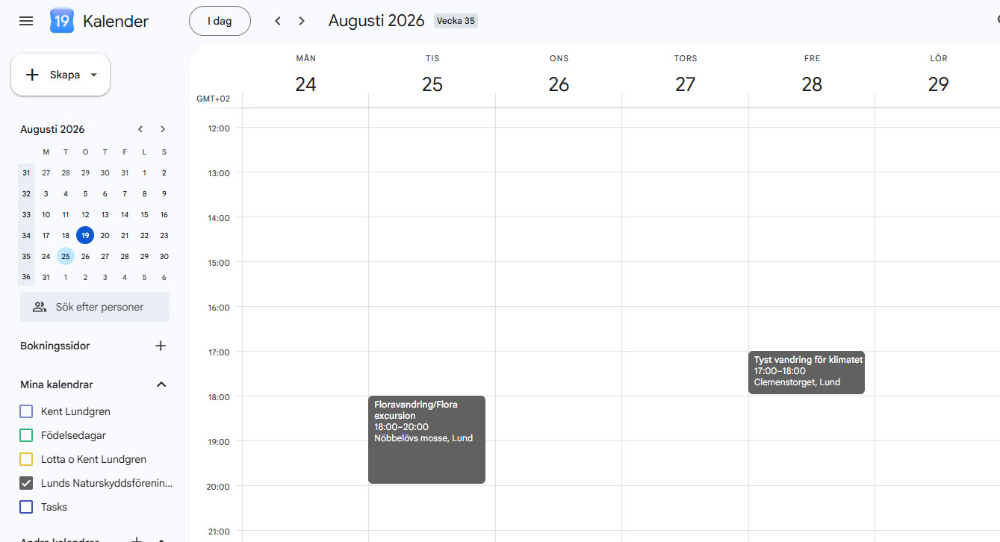

23 programpunkter är inlagda
Hela höstprogrammet 2026 och de två första vårpunkterna 2027 finns nu i kalendern — från Lund unites for the climate den 22 augusti 2026 till Startmöte för våren den 4 februari 2027. Varje aktivitet har titel, datum, tid, plats och en kort beskrivning, hämtade från föreningens egen programsida.
Källa för programinnehållet: Lunds Naturskyddsförenings egen programsida.
Så här ser det ut i praktiken

Vem ligger bakom programmet
Salme Portinson
Håller i programmet — planerar och samordnar föreningens aktiviteter termin för termin.
Per Blomberg
Ordförande i Lunds Naturskyddsförening.
Så fungerar en delad digital kalender
En delad kalender är en enda kalender som flera kan se — eller hjälpas åt att fylla i — i stället för att var och en håller koll på sin egen lista eller ett tryckt program. Så här funkar det i praktiken:
- 1
Ett event, en källa. Varje aktivitet läggs in en gång — med titel, datum, tid, plats och en kort beskrivning — i stället för att finnas i flera olika listor som kan hamna i otakt med varandra.
- 2
Prenumerera i din egen kalenderapp. Den som får tillgång till kalendern (t.ex. via en delningslänk från föreningen) kan lägga till den i Google Kalender, Outlook eller Apple Kalender — den dyker då upp bredvid dina egna kalendrar, utan att du behöver kopiera in något för hand.
- 3
Ändringar syns automatiskt. Flyttas en aktivitet, eller läggs en ny till, uppdateras det direkt hos alla som prenumererar — ingen behöver ladda ner ett nytt PDF-program.
- 4
Påminnelser går att slå på. De flesta kalenderappar kan påminna dig innan en aktivitet börjar, så man missar inte en vandring eller en föreläsning man tänkt gå på.
Vill du prenumerera på LNFs kalender? Hör av dig till föreningen så får du rätt länk att lägga till i din egen kalenderapp.